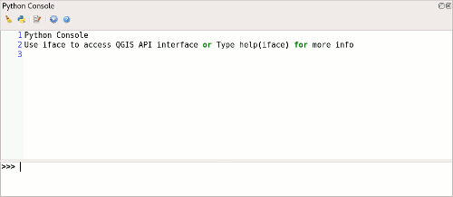

Python in QGIS¶
The core application and libraries of QGIS are programmed in C++. Nonwithstanding, Python plays an important role in its ecosystem: Most of the pre-installed plugins and even some of the data provider modules are written in Python, and virtually all functions of the interface and the libraries are exported to a Python API (Application Programming Interface). It takes only moderate effort to author extensions to QGIS which integrate seamlessly into its user interface, create stand-alone applications using components of QGIS, such as a map window or a data backend, or run custom scripts within QGIS. To really dive into it, see the PyQGIS Developer Cookbook which walks you from easy Hello World examples to writing your own applications.
Today, we want to concentrate on how to use Python to combine simple algorithms in scripts within QGIS to carry out more complex operations.
Using a Python console¶
There is (at least) two different Python consoles available within QGIS:
Access the built-in Python console from the menu Plugins → Python Console. It offers basic functionality, and allows to load and save scripts from and to files.
The more advanced iPython console has to be installed as a Plugin before first use: - Go to Plugins → Manage and Install Plugins, - Select to search in All plugins, and type ipython into the search field. - Select the IPyConsole plugin, and click Install plugin

Note
IPython or Jupyter have to be installed on your computer, see the plugin description for instructions on how to install these requirements. On MS Windows operating systems, installing these modules unfortunately is not straightforward. This blog post has step-by-step instructions (replace lxml with qtconsole and jupyter==1.0.0)
The console is now available from the menu Plugins → IPython QGIS Console → Windowed

By default an iface object is imported, which allows the access to the currently active QGIS instance’s user interface. For example, we can easily retrieve the active (selected) layer, list its name and count its features:
# Get active layer:
In [1]: layer = iface.activeLayer()
# Print its name, and its number of features:
In [2]: print(layer.name())
Out[2]: 'DAMSELFISH Distributions'
In [3]: print(layer.featureCount())
Out[3]: 231
You can access a help text on objects using help():
In [1]: help(layer)
Out[1]: Help on QgsVectorLayer in module qgis._core object:
class QgsVectorLayer(QgsMapLayer, QgsExpressionContextGenerator, QgsFeatureSink, QgsFeatureSource)
| Represents a vector layer which manages a vector based data sets.
|
| The QgsVectorLayer is instantiated by specifying the name of a data provider,
| such as postgres or wfs, and url defining the specific data set to connect to.
| The vector layer constructor in turn instantiates a QgsVectorDataProvider subclass
| corresponding to the provider type, and passes it the url. The data provider
| connects to the data source.
|
| The QgsVectorLayer provides a common interface to the different data types. It also
| manages editing transactions.
|
| Sample usage of the QgsVectorLayer class:
|
| \code
| QString uri = "point?crs=epsg:4326&field=id:integer";
| QgsVectorLayer *scratchLayer = new QgsVectorLayer(uri, "Scratch point layer", "memory");
| \endcode
|
| The main data providers supported by QGIS are listed below.
|
| \section providers Vector data providers
|
| \subsection memory Memory data providerType (memory)
|
| The memory data provider is used to construct in memory data, for example scratch
| data or data generated from spatial operations such as contouring. There is no
| inherent persistent storage of the data. The data source uri is constructed. The
| url specifies the geometry type ("point", "linestring", "polygon",
| "multipoint","multilinestring","multipolygon"), optionally followed by url parameters
| as follows:
…
…
This help text is the same information listed in QGIS’ API documentation at qgis.org/pyqgis.